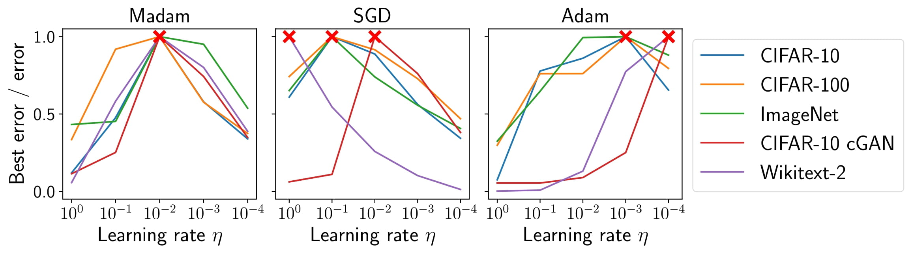
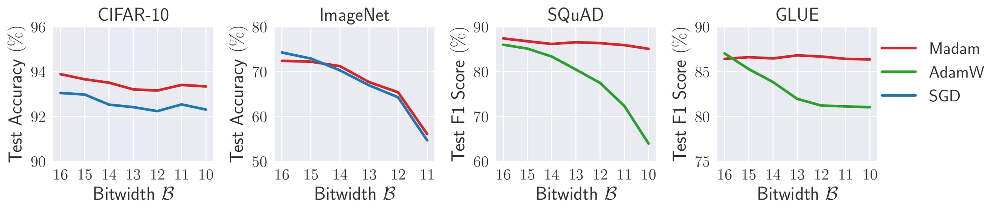
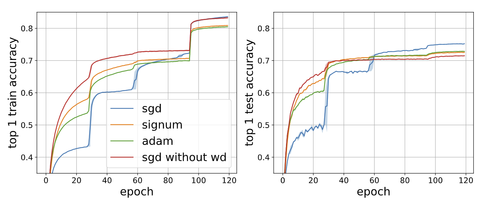
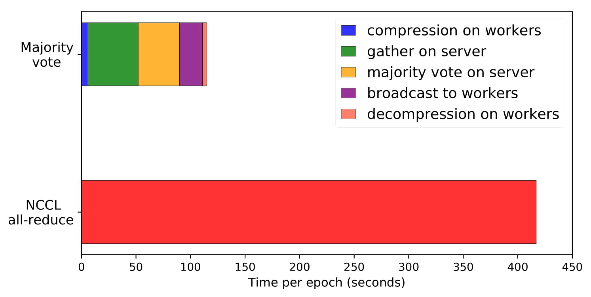

Optimization in Deep Learning
Will be updated soon.
List of optimizers and their applications
1. Madam Optimizer: Multiplicative Weight Update [link]
Jeremy Bernstein, Jiawei Zhao, Markus Meister, Ming-Yu Liu, Anima Anandkumar, Yisong YueWe propose a multiplicative weight update method Madam - a multiplicative version of the Adam optimizer. We prove that multiplicative weight updates satisfy a descent lemma tailored to compositional functions. Our empirical results show that Madam can train state-of-the-art neural network architectures without learning rate tuning.
2. LNS-Madam: Low-Precision Training with Multiplicative Weight Update [link]
Jiawei Zhao, Steve Dai, Rangharajan Venkatesan, Ming-Yu Liu, Brucek Khailany, Bill Dally, Anima AnandkumarWe develop a co-designed low-precision training framework LNS-Madam, in which we jointly design the logarithmic number system (LNS) and the multiplicative weight update algorithm Madam. We prove that Madam induces less quantization error as it directly updates the weights in a logarithmic representation. Thus, training with Madam leads to a stable convergence even if precision is strongly limited.
3. signSGD Optimizer: Sign-based Stochastic Gradient Descent [link]
Jeremy Bernstein, Yu-Xiang Wang, Kamyar Azizzadenesheli, Anima AnandkumarWe propose signSGD that updates the weights only using the sign of each minibatch stochastic gradient. Through theoretical analysis, we prove that signSGD matches the SGD-level convergence rate. On the practical side, we find that the momentum counterpart of signSGD is able to match the accuracy and convergence speed of Adam on deep Imagenet models.
4. signSGD with Majority Vote: Distributed Learning using signSGD Algorithm [link]
Jeremy Bernstein, Jiawei Zhao, Kamyar Azizzadenesheli, Anima AnandkumarWe propose signSGD with majority vote - a robust, communication-efficient learning algorithm for distributed learning. Workers transmit only the sign of their gradient vector to a server, and the overall update is decided by a majority vote. This algorithm uses 32× less communication per iteration than full-precision, distributed SGD. Benchmarking against the state-of-the-art collective communications library (NCCL), our framework leads to a 25% reduction in time for training resnet50 on Imagenet when using 15 AWS p3.2xlarge machines.
